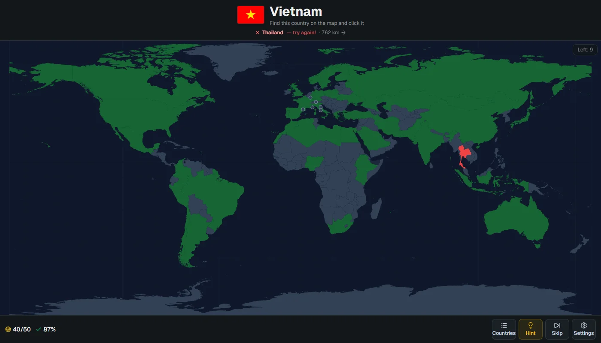
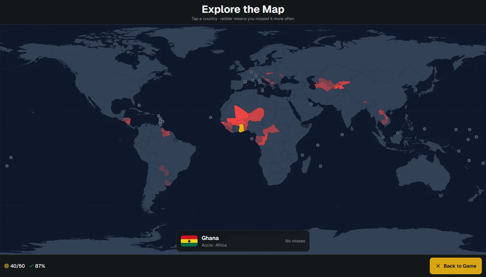

country quiz: a world map that tells you how wrong you were
country quiz is a world map game in Turkish and English. a country's name shows up and you click it on the map, or the map marks one and you name it. there are six ways to play: by name, by flag, by capital, a reverse mode with four options, a typed mode, and a neighbours mode where any country that shares a border is the right answer. it runs entirely in the browser with no backend, and it's live at kaandinc.com/country-quiz.
the stack is Next.js 16 with React 19, Tailwind 4 and react-simple-maps, built as a static export. the map shapes (world-atlas at 1:50m) and all the flags are served from the same folder as the page, so after the first load nothing else is fetched.

the game is a reducer
all the rules live in one pure function. the queue holds ISO alpha-3 codes and queue[0] is the country being asked. a correct answer moves it to done; three misses on the same country (a hint counts as one) reveal it in yellow and send it to the back of the queue. skipping rotates the queue, and a timed run just ends when the clock does. because the reducer never touches the DOM, the whole thing is tested with plain node --test, with no browser and no test framework.
case "answer":
if (a.code === s.queue[0]) return { ...s, score: s.score + 1, attempts: s.attempts + 1, phase: "correct" };
if (s.wrong.includes(a.code)) return s; // the same wrong country only counts once
return miss(s, { wrong: [...s.wrong, a.code] });the component around it handles everything that isn't a rule: the pause after an answer, the countdown, sound, keyboard shortcuts, and saving the unfinished game to localStorage on every change. lifetime misses per country are kept there too, and a practice round asks only the 20 countries you miss most. a clean find takes one off that country's count, so the list gets shorter as you learn.
a miss that points somewhere
the first version only said "wrong, try again". that's true but useless: if you click Thailand looking for Vietnam, you were close, and if you click Peru you weren't. now a wrong pick shows the distance from the clicked country to the answer and an arrow toward it.
export function offBy(from: [number, number], to: [number, number]) {
const [lng1, lat1, lng2, lat2] = [...from, ...to].map((d) => (d * Math.PI) / 180);
const a = Math.sin((lat2 - lat1) / 2) ** 2 + Math.cos(lat1) * Math.cos(lat2) * Math.sin((lng2 - lng1) / 2) ** 2;
const km = 2 * 6371 * Math.asin(Math.sqrt(a));
const deg = (Math.atan2(to[0] - from[0], to[1] - from[1]) * 180) / Math.PI;
return { km: Math.round(km), deg: (deg + 360) % 360 };
}the distance is the real great-circle distance, but the direction is deliberately not the great-circle bearing. the map is equirectangular, so lines of latitude are straight. if you click France while looking for Japan, the shortest path on the globe leaves France heading north-east (a bearing of about 34°), because it bends up over Siberia. on the screen, Japan is almost straight east (about 94°). the arrow is there to tell you where to look on the map in front of you, so it uses the flat map's angle. the map also doesn't wrap around, so from Japan to the US the arrow points west across the whole map, not east over the Pacific. the test pins a short case: Paris to Istanbul comes out at about 2,250 km, with the arrow between east and south-east.
typing a name
the reverse mode gives four options, and after a while you learn to eliminate instead of remembering. the typed mode marks a country and gives you a text box. the hard part is deciding what counts as right. "Côte d'Ivoire", "cote divoire" and "Fildişi Sahili" should all work, and so should "argentna". "Pera" shouldn't count as Peru.
export const normalize = (s: string) =>
s.normalize("NFD").replace(/\p{M}/gu, "").toLowerCase().replace(/ı/g, "i").replace(/[^a-z0-9]/g, "");everything is normalized first: decompose, drop the accent marks, lowercase, and map the dotless Turkish ı to i, because NFD leaves it alone. then the input is compared to the answer's Turkish and English names with an edit distance. the allowance grows with length: no typos under five letters, one up to seven, two from eight. short names get none, because one letter is the whole difference between Iran and Iraq. if the input isn't close to the answer but is exactly another country's name, it counts as a wrong pick and that country turns red on the map. if it matches nothing, it's ignored, so a typo in the middle of a name doesn't cost a miss.
neighbours from the map itself
the neighbours mode needed a border list, and I didn't want to type 158 of them by hand. the map file already knows: it's TopoJSON, where two countries that share a border share the same arcs. topojson-client (already installed as a dependency of react-simple-maps) has a neighbors() function that returns exactly that, so a 30-line script reads the map once and writes lib/neighbors.ts.
two shapes needed care. Somaliland and Northern Cyprus are drawn separately in the atlas but aren't playable, and if they're skipped, Somalia loses its border with Djibouti, which runs through Somaliland. the script counts them as Somalia and Cyprus. the honest limit is that the borders come from the 1:50m shapes, so anything the map doesn't draw doesn't exist: Spain and Morocco share land borders at Ceuta and Melilla, but the map doesn't, so neither does the game.
the same ten countries for everyone
the daily challenge picks ten countries from the date, so everyone playing on the same day gets the same set. Math.random can't be seeded, so the date string is hashed and fed into mulberry32, a tiny 32-bit generator, which drives an ordinary Fisher-Yates shuffle. small islands are left out to keep it fair, and in neighbours mode only countries with a land border are picked. at the end, the result is one square per country in the day's order: green first try, yellow found after a miss, red revealed. it copies to the clipboard as text, so it pastes anywhere.
where you keep missing

the lifetime misses were already being saved for the practice round, so the explore view just paints them. no colour scale library: each country's fill is color-mix(in srgb, #ef4444 N%, #334155), with five or more misses fully red. the picture it gives is usually more honest than you'd like. West Africa and Central Asia light up fast.
living under /country-quiz
the site is a GitHub Pages project, so it's served from a sub-path instead of the domain root. Next's basePath handles its own scripts and links, but not plain <img> tags or URLs passed to fetch, and the flags and the map file are exactly those. the base path is defined once in the config, exposed as an environment variable, and every flag URL goes through one small helper. a GitHub Actions workflow runs the tests, builds the static export and deploys it on every push to main. the installable manifest also needed the prefix on its start URL and icon, or the installed app would open the site root instead of the game.